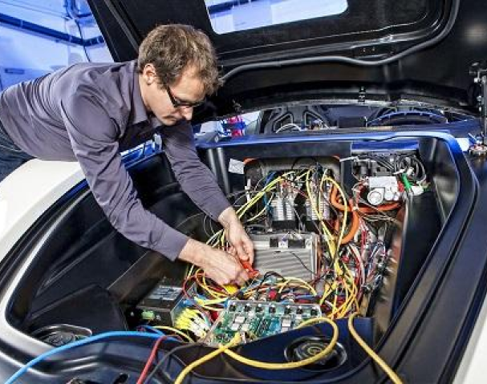
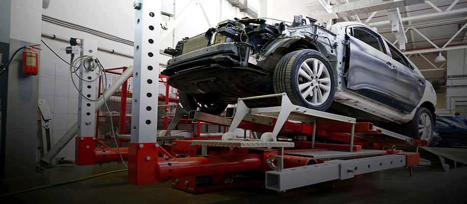

Ремонт электрики автомобиля

Источники тока в автомобиле это генератор и аккумелятор,
поэтому чаще всего поломки появляются именно там.
Неисправности аккумулятора:
- окислились клеммы аккумулятора;
- замыкание между электродами;
- неправильная эксплуатация.
Неисправности генератора:
- износились подшипники или коллектор;
- появились повреждения на источнике напряжения;
- замыкание обмотки;
- повреждения на проводах и выпрямителях.
Что влияет на работу электрики
На электрику автомобиля могут повлиять следующие факторы, которые вызывают проблемы:
- отказ работы приборов;
- любые повреждения автомобиля;
- выход машины из строя;
- деформация в процессе самостоятельного ремонта без специального оборудования и навыков;
Возгорание - это самый плохой исход, который может произойти если вовремя не произвести ремонт электрики автомобиля.
Этапы ремонта
Для начала проводится компьютерная диагностика,
которая позволяет выявить какие именно неполадки случились с автомобилем.
Затем в зависимости от поломок проводится ремонт:
- чип тюнинг;
- восстановление элетрической проводки;
- замена или ремонт датчиков, генераторов, стартеров;
- ремонт ABS, SRS, FRM, ESP, ЭБУ и другое.
Рихтовка кузова
На сегодняшний день специалисты разделяют деформации кузова на виды в соответствии с их сложностью:
- Небольшие вмятины. Такие деформации появляются, когда по кузову ударяет какой-то мелкий предмет, или когда автомобиль сталкивается с небольшим препятствием. Устраняются такие деффекты достаточно легко;
- Невидимые глазу деформации. Причиной возникновения является неаккуратное вождение автомобиля длительное время. Такие деформации могут окзать влияние на более серьезные системы автомобиля. Устранить их уже сложнее;
- Последствия аварий. В данном случае рихтовка кузова будет очень сложной и дорогостоящей, поскольку после аварии страдает не только наружные детали, но и несущие конструкции.
Способы рихтовки
На данный момент выделяют четыре способа рихтовки автомобильного кузова:
- Классическая. Данный способ можно применить практически к любым повреждениям. Для данного вида используют оправки, рычаги, молотки и фасонные плиты;
-
Вакуумная. Данный способ можно использовать только в том случае, если краска на автомобиле не повреждена.
Для использования способа нужен вакуумный обратный молоток;
-
Деликаткая. Для применения данного способа так же необходим специальный инструмент, а использовать способ можно для вмятин, не требующих дальнейшей покраски;
-
При помощи споттера. Данный способ применяется для самых сложных деформаций. Он использует для поставленных целей контактную сварку.
Возгорание - это самый плохой исход, который может произойти если вовремя не произвести ремонт электрики автомобиля.
Установка парктроников в автомобиль
Парктроник - верный друг водителя
Чтобы облегчить и обезопасить процесс парковки, на машины устанавливается парковочный радар или – парктроник.
Его основная миссия заключается в следующем:
-
определение расстояния до ближайшего препятствия;
-
предупреждение водителя об опасности, если дистанция меньше критической;
-
вывод на экран изображения с камеры, если таковая интегрирована в систему.
Для сигнализации используется громкий звуковой сигнал, а в парктрониках с дисплеями, расстояние до препятствия отображается на мониторе.
Некоторые системы снабжаются еще и камерами, передающими на экран вид со стороны бампера.
Монтаж и цена парктроника
Технологически установка парктроников в автомобиль сводится к монтажу радаров на бамперы и установке в салоне центрального блока. Этот модуль принимает информацию с датчиков и доводит ее до водителя с помощью бипера, в продвинутых системах для оповещения применяется еще и монитор.
Стоимость парктроников варьируется в широких пределах, так как зависит от количества датчиков в системе, наличия в ней экрана и многих других характеристик. Устройство среднего класса обойдется в несколько тысяч руб, а для определения окончательной цены вопроса, к стоимости радара следует приплюсовать сумму за услуги по его монтажу.
Ремонт лобовых ударов
Стекла - это наиболее уязвимая часть автомобиля. Особенно это касается лобовых стекол. Камушки из под колес, ветки деревьев, погодные условия и другие явления могут привести к тому, что лобовое стекло будет повреждено.
Устранить различные царапины, сколы и другие недочеты автостекла могут в автомастерской “Дельта-сервис” в Санкт-Петербурге.
Виды повреждений
-
Трещина в виде нити или паутинки, распространяется во все стороны от места удара.
- Затир или потертость, напоминающая след от наждачной бумаги.
- Царапина или небольшой дефект стекла в виде тонкой прямой линии.
- Скол - углубление похожее на воронку.
Этапы работ:
- место повреждения заклеивается скотчем, моется и сушится;
- трещины рассверливаются;
- затиры удаляют с помощью полировк
Развал-схождение авто
Безопасность езды на автомобиле обиспечивает множество факторов, в том числе и развал-схождение авто.
Но что это такое? Если говорить простым языком, то данный термин обозначает угол, под которым установлены колеса.
При неправильно отрегулировании развал-схождения, автомобиль зачастую уводит в сторону, что значительно увеличивает риск возникновения аварийной ситуации на дороге.
Диагностика
Однако, не стоит забывать, что даже самые явные признаки могут возникнуть и при оптимально настроенном развал-схождение авто. Именно поэтому в любом автосервисе, услышав жалобы автовладельца, прежде всего проводят диагностику всего автомобиля. Данные действия позволяют точно определить причины неполадок и способы их устранения.
Особенности регулировки развала-схождения
Как и любая другая процедура, регулировка развала-схождения имеет свои особенности, которые мастера всегда учитывают:
-
Проведение регулировки только в сервисных центрах;
-
Регулировка производится в полностью пустом автомобиле. Однако, в некоторых случаях мастера производят регулировку с водителем внутри, регулируя под него индивидуально;
-
Перед всей процедурой мастер в обязательном порядке проверяет давление в шинах и состояние подвески;
-
Вся регулировка проходит на специальном стенде.
Учитывать вышеуказанные особенности необходимо для качественного произведения работ.
Кузовной ремонт после ДТП в СПб
Кузовной ремонт после ДТП – обязательная часть ремонтных работ, которая позволяет восстановить практически любой аварийный автомобиль. Значительная сложность и трудоёмкость процесса обусловлена многими факторами, которыми и сопровождается восстановление автомобиля. Работы выполняет автомобильный мастер с опытом, применяя высококачественные расходные материалы и современное оборудование.
Наши достоинства
Некоторые автовладельцы предпочитают самостоятельно исправить последствия аварии, это может стать причиной получения недостаточно хорошего и долгого результата.
Мы предлагаем выполнить кузовной ремонт после ДТП быстро и очень качественно, а обращение в нашу компанию гарантирует:
- профессиональный комплексный подход;
- доступную и честную цену;
- отличный результат.
Настоящие мастера своего дела, входящие в штат нашего автосервиса, обладают большим опытом работы, имеют нужное техническое оснащение, поэтому способны выполнить ремонт любой сложности.
Наши специалисты качественно и максимально оперативно решают проблемы, вызванные повреждением машины в результате дтп, включая нарушение геометрии кузова. Обращение к нам – это хорошая возможность получить машину с прежним красивым видом. Большое значение имеет то, что у нас можно получить самый полный пакет услуг в любое удобное время и с продолжительным гарантийным сроком на все виды работ.
Виды работ
Кузовная часть - это одна из самых дорогих, но при этом сильно уязвимых элементов автомобиля. Но при этом много платить за выполнение таких работ, не хочется ни одному автовладельцу.
Если автомобильный металл «не повело», то чаще всего бывает достаточно сделать замену отдельной части, используя с этой целью новую крышу, заднюю или переднюю часть кузова. Эти работы нельзя отнести к числу слишком дорогих, поэтому такое восстановление машины для автовладельца вполне доступно.
Основные этапы ремонта:
-
диагностика повреждений с выявлением всех имеющихся дефектов кузова аварийного автомобиля;
-
выполнение калькуляции цены необходимых для ремонта расходных материалов и запасных частей;
-
выполнение ремонтных работ по составленной схеме выявленных кузовных повреждений;
-
восстановление первоначальной кузовной геометрии посредством вытягивания на стапеле с предварительным расчётом допустимого силового предела;
-
выполнение полной замены всех деталей и запасных частей, неподлежащих восстановлению, с применением болтового или сварочного соединения.
В обязательном порядке осуществляется максимально тщательная зачистка поверхностей и их предварительная подготовка
к процедуре окрашивания. Данный этап предполагает удаление всех следов коррозийных изменений, обезжиривание
и последующее покрытие поверхности слоем специального антикоррозийного состава. При наличии слишком сложных и массовых дефектов производится грунтование и шпаклёвка, что обеспечивает высококачественное выравнивание и окрашивание металла.
Большое значение имеет процесс несения самого лакокрасочного покрытия. Только мастера с опытом могут выполнить весь комплекс работ быстро и грамотно. От того, насколько тщательно подготовлено основание, правильно выбрана и нанесена краска, зависит эстетичность внешнего вида автомобиля. Покраска, проведённая с нарушениями или непрофессионально, в кустарных условиях, может стать причиной формирования даже на основательно подготовленных поверхностях неровностей или краски.
Окрашенный автомобильный кузов требуется высушить при помощи инфракрасных ламп. При необходимости наносится несколько слоёв красящего состава. Завершающим, финишным этапом восстановления транспортного средства станет полировка поверхности, что сделает внешний вид машины безупречным. Правильная обработка дает гарантию максимальной защиты металла от негативного воздействия в течение долгого времени.
Локальный ремонт авто в СПБ
Кузовной ремонт автомобиля и восстановление геометрии корпуса транспортного средтсва- это сложная и требующая огромного внимания работа, которая в свою очередь делится на несколько пунктов деятельности мастеров. Для совершершения данной работы требуется подготовленное чистое помещение, квалифицированные в своем деле работники и специализированная техника, без которой вручную уже не работает ни один уважающий себя мастер. Ошибки мастеров кузовного ремонта, допущенные при неудовлетворительном ремонте, влияют не только на внешний вид и корпус автомобильного транспорта, но и могут сказаться на ходовых качествах машины.
Как показывает практика кузовного ремонта в Санкт-Петербурге, после выполнения работ по локальному ремонту автомобилей в СПБ, требуются малярные работы по окраске заменяемых и восстановленных аксессуаров.
Малярно-кузовной ремонт чаще всего требуется, когда появляется необходимость в устранении мелких, локальных проблем с лакокрасочным покрытием корпуса автомобиля. К этим же проблемам относятся незначительные вмятины, царапины на кузовных деталях: капоте, дверях и крыльях, впрочем, при сложившейся ситуации часто приходится разбирать несколько сопряженных элементов, чтобы в процессе покрытия кузова лакокрасочными материалами соседней детали, можно было получить полное попадание в цвет, такие случаи очень редкие
ВАЖНО!!! Стоимость локальных ремонтных услуг определяется в каждом случае индивидуально, только после проведения осмотра квалифицированным сотрудником автомобильной мастерской.
Ремонт лонжерона

Лонжерон - слово, пришедшее к нам из французского языка
и означающее продольный силовой элемент
– это деталь, одна из наиболее значимых в автомобиле.
Лонжероны в автомобиле отвечают за его прочность и жесткость, имеют сложную геометрическую форму с целью обеспечить максимальные характеристики при минимальном весе.
Ремонт лонжерона автомобиля в Санкт-Петербурге –
достаточно востребованная услуга, разберемся почему
и в каких случаях он может потребоваться:
-
Изменение геометрии (или даже разрушение) лонжерона в результате ДТП;
-
Растрескивание конструкции в результате длительного воздействия механических нагрузок (усталости металла);
-
Частичная или полная (сквозная) коррозия конструкции лонжерона.Наиболее частая причина, к сожалению, это последствия ДТП (поэтому и кузовной ремонт в СПб – такая востребованная услуга).
Низкая цена не самый главный критерий в этом вопросе. От того, насколько элементы силовой конструкции вернутся в исходное (штатное) состояние будет зависеть:
-
Управляемость автомобиля (его поведение на дороге)
- Износ покрышек и элементов подвески (вследствие неравномерной нагрузки)
- Внешний вид автомобиля (одинаковость зазоров между кузовными деталями)
Ваша безопасность и хорошее самочувствие, что в конечном итоге самое главное.
Покраска капота
Покраска капота автомобиля в Санкт-Петербурге - одна из наиболее популярных среди владельцев автомобилей услуг. Популярность данной услуги, скорее всего, связана с её дешевизной и необходимостью. Причин для покрастки капота есть множество, но самые популярные из них - это улучшение эстетического вида автомобиля, а также вынужденная покраска ржавчины и прочих злокачественных образований. Покраска капота автомобиля в Санкт-Петербурге обычно не занимает много времени, а это означает, что владельцу авто не придётся долгое время обходится без транспортного средства. Покраска капота автомобиля в Санкт-Петербурге осуществляется различными автосервисам, однако качество услуг сильно отличается в разных местах. У одного из наших клиентов была ситуация, когда мастер специально испортил кузов транспортного средства, чтобы владельцу автомашины пришлось заказать более дорогостоящую услугу. Таким образом работники автосервиса пытаются увеличить доход мастерской. Поэтому очень важно ответственно подходить к выбору автосервиса. Вот основные критерии, которые необходимо учитывать:
-
Стоимость. Цена на услуги автосервиса не может быть ни слишком низкой, ни слишком высокой. Чрезвычайно низкая цена - скорее всего просто приманка. На самом же деле, по окончанию работ, мастера объявляют о том, что, мол, возникли непредвиденные расходы, которые тоже необходимо оплатить. Слишком высокая цена - это попытка владельцев непопулярного сервиса компенсировать свои расходы за счёт малого числа клиентов;
-
Опыт работы автосервиса и отзывы других посетителей. Важно учитывать отзывы и мнения других людей, ведь если услуга понравилась большинству, то велик шанс, что услуга действительно хорошая;
-
Отношения работников автосервиса по отношению к клиентам. Если работники дружелюбны - это первый знак того, что сервису не всё равно на своих клиентов;
-
Квалификация и навыки мастеров. Это один из наиболее важных пунктов. Мастер - лицо сервиса.
Цена покраски авто зависит от того, насколько большой элемент необходимо покрасить,
а также от выбора самой краски. Более долговечные краски стоят, как правило, дороже.
Покраска автомобиля
Покраска автомобиля в Санкт-Петербурге может понадобиться владельцам автомобилей по разным причинам. Для кого-то это возможность скрыть какой-либо дефект или ржавчину, кто-то другой просто хочет придать своему транспортному средству другой вид. Мастера одного сервиса могут сделать всё качественно и честно по отношению к клиенту, другие же постараются небрежно покрасить авто, затратив минимальное количество времени. Отличается и сама краска - некоторые мастерские предлагают качественную краску, другие довольствуются чем-то средним (или низкокачественным). И наконец последнее, что сильно отличает один автосервис от другого - качество обслуживания и отношение к клиентам.
Автомобилю может требоваться полная, локальная покраска. Тип покраски определит цену и длительность работ. Кузовной ремонт в СПб также может включать в себя работы по покраске, однако такой ремонт более затратен финансово.
Вне зависимости от причин, по которой автомобиль необходимо покрасить, покраска автомобиля в Санкт-Петербурге - это услуга, которую предоставляют многие отечественные автосервисы. Некоторые люди, при таком разнообразии, предпочитают заниматься покраской самостоятельно. Однако, сервисы отличаются лишь некоторыми моментами.
Важно знать, что краска - не только косметический элемент. Красить автомобиль также необходимо для защиты от различного внешнего воздействия, которое может негативно повлиять на состояние самого автомобиля. Покраска автомобиля в Санкт-Петербурге отличается ценой. Далее - качеством предоставляемых услуг.
Многие эксперты полагают, что качество покраски определяет и долголетие самого автомобиля.
Рекомендуется перекрашивать автомобиль каждые 5-7 лет в оптимальных условиях эксплуатации.
Однако, если случается авария или ржавчина, то покраску необходимо осуществить незамедлительно.
На данный момент, наш сервис предоставляет одни из наиболее качественных услуг покраски. Если есть какие-то вопросы, можно смело задать их по специальному телефону. Если требуется услуга, то можно записаться на первичную диагностику!
Покраска крыши
Лакокрасочное покрытие крыши автомобиля страдает в первую очередь при длительной эксплуатации под воздействием неблагоприятных природных факторов или в результате аварии, противоправных действий третьих лиц. Если это произошло, потребуется покраска крыши автомобиля в Санкт-Петербурге, которая поможет обновить внешний вид средства передвижения. Крыша автомобиля является самым большим по площади элементом кузова.
Кроме того, ее ремонт сопряжен с некоторыми затруднениями. Поэтому окраска требует высокого профессионализма.
Тем, кто выбирает, где осуществить ремонт элементов кузова в СПб по низкой цене без потери качества, рекомендуем обратить внимание на множество положительных отзывов о компании «Дельта-Сервис», оставленных в сети интернет благодарными клиентами автосервиса.
Записаться на покраску крыши авто можно прямо сейчас на сайте компании.
Ремонт салона автомобиля
Салон автомобиля – то, на что чаще и дольше обращают внимания водители и пассажиры. 90 процентов времени, проведённого с автомобилем, наши глаза воспринимают именно салон. Поэтому любая мелочь в его неисправности может со временем стать источником настоящей депрессии. Произвести ремонт салона автомобиля в Санкт-Петербурге по идеальной цене за минимальное время можно у нас. Мы производим как мелкий ремонт салона автомобиля в Санкт-Петербурге, так и полную реставрацию, перетяжку салона в СПБ, используя родные материалы производителя. За ремонтом салона автомобиля в Санкт-Петербурге к нам обращаются и старые клиенты, уже убедившиеся в достоинствах нашего салона, так и новые.
Наши специалисты имеют большой опыт в ремонте салонов и устраняют такие проблемы, как:
- Ремонт обивки сиденья
- Подбор и замена стёртой и треснувшей кожи
- Исправление формы поролона
- Отделка декоративных швов
- Устранение царапин
- Перетяжка потолка
- Перестилка пола
- Ремонт пластика
Мы используем самое современное оборудование, качественные сертифицированные запчасти и материалы от надёжных поставщиков, которые Вы сможете выбрать вместе с нашими специалистами.
Часто можно услышать, что ремонт салона – дело долгое, затратное, и зачем, мол, вообще его ремонтировать, если это никак не влияет на езду автомобиля? Но это всё мифы. Мы убедим Вас, что ремонт салона – это:
- Быстро
- Недорого
- Долговечно
- Поднимает настроение Вам и Вашим пассажирам
Сданную работу клиент проверяет вместе с нашими специалистами. Мы пройдёмся по всем швам, проверим каждое крепление и прослушаем салон на наличие скрипа и ненужного шума, протестируем работу приборов. И если после этого спустя небольшое время Вы вдруг вернётесь к нам, то только чтобы показать и посоветовать нас Вашим друзьям! Мы ручаемся за качество проделанной работы.
Узнайте, что такое работа настоящих профессионалов, верните Вашему автомобилю красоту, а себе – хорошее настроение и уверенность в своих силах. Всё, что для этого следует сделать – позвонить и оставить заявку в «Дельта-Сервис». Мы всегда на связи и готовы дать консультацию по телефону.
Ремонт порогов авто
Состояние кузова и других элементов транспортного средства позволяет сделать определенные выводы относительно отношения водителя к своему авто. Иногда вследствие небольшой аварии или движения на участках с отсутствие надлежащего асфальтированного покрытия, кузов и пороги авто могут потерять свой надлежащий вид. В случае с порогами, такой изъян может стать причиной более серьезных повреждений, которые не только потребуют еще больше финансовых вложений, но и способны существенно снизать безопасность водителя и пассажиров. Именно поэтому, ремонт порогов автомобиля в Санкт-Петербурге можно считать одной из лучших идей для любого автовладельца.
Такой шаг позволит не беспокоиться о возможном повреждении двигателя в результате небольшого удара, который может возникнуть во время езды без порогов и с поврежденными элементами.
Сегодня наш сервис пользуется заслуженной популярностью у многих водителей города, независимо от марки их авто.
Главными преимуществами, подталкивающими к такому выбору, можно считать:
-
низкую стоимость комплектующих, благодаря которой любая услуга по замене или восстановлению модуля транспортного средства является доступной для любого автовладельца.;
-
использование профессионального оборудования, позволяющее поводить эффективную диагностику и ремонт транспортного средства;
-
гарантия качества на любую проведенную манипуляцию по восстановления надлежащего состояния средства передвижения.
Учитывая такие особенности, обращение в наш автосервис с целью восстановления надлежащего вида порогов транспортного средства можно считать более чем удачной идеей для любого водителя. Не упустите свой шанс воспользоваться услугами опытных мастеров, знающих толк в своем деле. Именно с помощью нашего автосервиса можно быстро и выгодно произвести любую замену и восстановление элементов авто. Свяжитесь с одним из наших операторов для уточнения особенностей сотрудничества для марки авто уже сейчас и в ближайшем будущем сможете самостоятельно убедиться в качестве наших работ.
Ремонт стекол автомобиля
Наиболее уязвимые части автомобиля являются стекла. В ежедневной суете они проверяются на прочность внешними факторами. Повреждаются стекла как при аварии, так и при попадании мелких камешков из под колес впереди идущего автомобиля, птиц или природных аномалий в виде града, перепада температур в салоне и за его пределами. Последствия этих событий приводят к тому, что на лобовом стекле появляются сколы и трещины.
Бывают повреждения которые не требуют замены стекла, только предотвращения дальнейшего расползания трещины. Для того чтобы трещина не поползла из места скола или не расползлась дальше, рекомендуем проводить ремонт как можно быстро. Не относитесь к выбору мастерской несерьезно, ведь только специалисты с опытом в этой сфере окажут качественную услугу. Ремонт стекол автомобиля в Санкт-Петербурге качественно и быстро произведет наш автосервис.
Бывают случаи, что автовладелец не обратился вовремя в автосервис, и трещина превратилась в большую паутину, это, как правило, требует полной замены лобового стекла. Или же владелец автомобиля обращался к мастерам с сомнительной репутацией, и те в свою очередь усугубили ситуацию. В таком деликатном вопросе, как ремонт или замена лобового стекла, лучше всего обращаться к специалистам с опытом. Преимущество нашего автосервиса перед множеством других:
- Выполнение стекольных работ любой сложности;
- Высококачественные материалы;
- Высокое качество услуги, Вам долго не придется обращаться в автосервис для ремонта или замены стекла;
- Квалифицированный персонал;
- Выполнение работ в указанные сроки, без задержек.
Ремонт и замена бампера
Бампер транспортного средства является специфическим его модулем, служащим для предотвращения серьезных повреждений кузова во время небольших дорожно-транспортных происшествий. В случае продолжительной эксплуатации, или движения по дорогам с отсутствием асфальтированного полотна, модуль может получить множество повреждений. Отсутствие надлежащего обслуживания в данном случае может стать причиной более серьезных проблем, влекущих за собой финансовую нагрузку. Сегодня ремонт и замена бампера в Санкт-Петербурге является процедурой, которую проводят в любо автосервисе.
Каждый из водителей, обращающийся с целью проведения диагностики и ремонта, сумел по достоинству оценить преимущества сотрудничества с нашей компанией. Нам доверяют свое авто тысячи довольных клиентов, о чем свидетельствуют многочисленные положительные отзывы.
Обращаясь к нам, вы сможете самостоятельно оценить следующие преимущества:
- доступная стоимость каждой услуги, независимо от того, какое повреждение получил ваш автомобиль, связанная с использование недорогих комплектующих, поставляемых напрямую с заводов производителя;
-
болeе точная диагностика, чему у конкурентов, которую мы осуществляем с применением современного оборудования;
-
гарантия на любую деталь, замена которой осуществляется в нашем сервисе.
Именно поэтому, количество водителей, обращающихся к нам с целью устранить определенную проблему с работой авто постоянно увеличивается. Стоит обратить внимание, что мы работаем не только с машинами, но и с людьми, консультируя каждого клиента относительно дальнейшего обслуживания установленного модуля. Такая помощь является главной причиной увеличения межремонтного периода вашего транспортного средства, независимо от того, какого типа была установлена деталь.
Не упустите свой шанс воспользоваться услугами опытных мастеров, профессионализм которых является главной причиной качества любых работ по обслуживанию авто в нашем сервисе. Обратитесь к нашему специалисту с целью уточнения особенностей замены бампера для вашей модели авто.